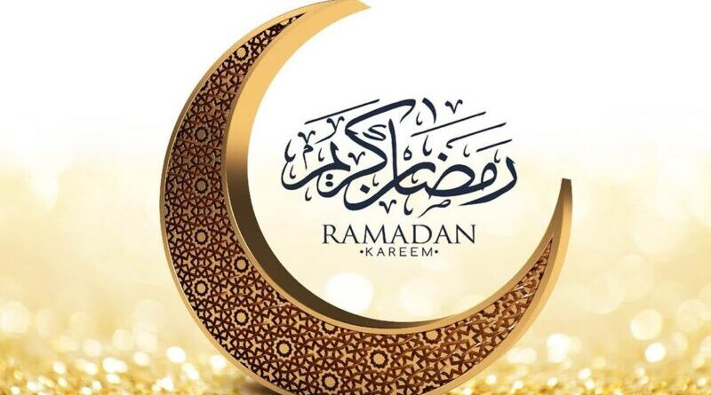

رحلة رمضان 2026.. رحلة العودة لله تعالى
السلام عليكم ورحمة الله وبركاته، رمضان مبارك علينا وعليكم وعلى الأمة الإسلامية جميعاً 🤍
السلام عليكم ورحمة الله وبركاته، رمضان مبارك علينا وعليكم وعلى الأمة الإسلامية جميعاً 🤍
رمضان لا يتطلب منا أن نكون كاملين أو مثاليين، بل أن نكون صادقين مع الله، بحسن نوايانا، وبحسن تعاملنا مع الآخرين، وبأن نتقرب إلى الله قدر ما نستطيع. من المهم أن نتذكر من البداية أن رمضان ليس سباقاً، وليس مقارنةً بين كم جزء قرأنا أو كم أنجز غيرنا، بل هو فرصة حقيقية للعودة إلى الله، وللتوبة والاستقامة، كلٌّ بحسب طاقته.
أهلاً بك في هذه الصفحة. صفحة انشأت لرمضانٍ هادئ، نساعد فيها بعضنا بعضاً لنعود جميعاً إلى الله تعالى بلا قسوة، ولا ضغط، ولا إرهاق. سنقرأ، ونذكر، ونسبّح، ونحب فعل الخير بإذن الله، كما نحن، لا كما يُطلب منا أن نكون.
لستَ ملزماً، أخي أو أختي، بأن تدخل هذه الصفحة كل يوم، ولا بأن تفعل كل ما فيها. اختر ما يناسبك، والتزم به، واسلك طريقك للعودة إلى الله على مهل، فنحن هنا مجرد وسيلة، نُسهّل الطريق ونرشد، لا أكثر.
في موقعنا هذا ستجد بإذن الله:
في هذا الشهر الفضيل، اخترنا لكم من أفضل وأحب الأذكار إلى الله تعالى، لكي نتقرب إليه ونجدد علاقتنا به. الخطة هي أن نصل إلى 50,000 ذكر في عشرين يومًا من رمضان. أما العشر الأيام الأخيرة من الشهر، فسيكون لدينا خطة أخرى خاصة بها، إن شاء الله تعالى، بما يليق بأهميتها وقدسيتها. لنجعل ذكر الله عادة يومية، ونحافظ على التواصل مع خالقنا في كل وقت. لكل ذكر فضل عظيم، وقد وردت له أحاديث وآيات كثيرة تبين أثره في الدنيا والآخرة. ورجاءا اضغط هناااا لكي تطلع على خطة الاذكار بشكل ادق.
شهر الرحمة والغفران, شهر المحبة, شهر عشق الله